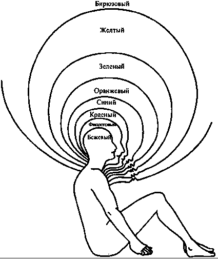

Глава "Спиральная динамика: пример волн бытия"
Сокращенная версия. Полная версия.

Бек и Коуэн (которые сохраняют полную верность системе Грейвза) обозначают эти уровни само-бытия как матрицы ценностей. Каждая МАТРИЦА - это одновременно психологическая структура, система ценностей и стиль адаптации, которые могут выражаться множеством способов, от мировоззрений до манеры одеваться и до форм государственного управления. И каждая МАТРИЦА - это холон, который превосходит и включает в себя своих предшественников - это развитие как расширение охвата. На рисунке я привожу диаграмму Грейвза, которую он сам использовал для иллюстрации этого "матрёшечного" включения (которое мы бы назвали холархией).
Бек и Коуэн используют разные названия и цвета для обозначения разных уровней мира самости, число которых составляет от восьми до девяти. Но это не просто проходящие фазы в развертывании замости; они представляют собой постоянно доступные способности и стратегии адаптации, которые, коль скоро они возникли, могут активироваться при соответствующих условиях жизни (например, инстинкты выживания могут активироваться в чрезвычайных ситуациях; способности связывания могут активироваться в близких отношениях между людьми и так далее). Более того, по словам Бека: "Спираль является беспорядочной, а не симметричной, и состоит из многообразных смесей, а не чистых типов. Они образуют мозаики, сетки и гибриды".
Первые шесть уровней - это "уровни существования", для которых характерно "мышление первого уровня". Затем происходит революционный сдвиг в сознании: появляются "уровни бытия" и "мышление второго уровня". Вот краткое описание всех восьми волн, доли населения мира, находящегося на каждой волне, и доля общественной власти и влияния, которыми обладает каждая из этих групп.
Бежевый цвет: Архаически-инстинктивный уровень. Уровень физического самосохранения. Приоритет отдается пище, воде, теплу, сексу и безопасности. Инстинкты и навыки используются только для выживания. Отдельная самость едва пробуждается. Для продолжения жизни формируются группы выживания.
Где наблюдается: В первобытных сообществах, у новорожденных младенцев, при старческом слабоумии, на последней стадии болезни Альцгеймера, у психически больных бездомных, при массовом голодании, при военном неврозе. 0,1 % взрослого населения земного шара, 0% власти.
Пурпурный цвет: Магически-анимистический уровень. Мышление по преимуществу анимистического типа; землю переполняют злые и добрые магические духи, которые оставляют за собой благословения, проклятия и колдовские чары, определяющие все события. Общности формируются по типу этнических племен. Духи предков связывают племя воедино. Политические связи устанавливаются в соответствии с принципом кровного и племенного родства. Этот уровень выглядит "холистическим", но на деле является "атомистическим": "есть название для каждого изгиба реки, но нет названия для самой реки".
Где наблюдается: Верования в злое колдовство, наподобие культа вуду, кровные клятвы, кровная месть, талисманы удачи, семейные ритуалы, этнические магические верования и предрассудки; распространен в условиях Третьего мира, в бандах, спортивных командах и корпоративных "кланах". 10% населения Земли, 1% власти.
Красный цвет: Уровень богов силы. Первое появление самости, отдельной от племени - могущественной, импульсивной, эгоцентрической, героической. Мифические духи, драконы, чудовища и богатыри. Феодальные властители защищают своих подданных в обмен на их верность и труд. Основа феодальных империй - сила и слава. Мир видится как опасные джунгли, полные опасностей и хищников. Герой покоряет силой, побеждает хитростью и подчиняет; в полную меру наслаждается собой, не ведая сожаления и раскаяния.
Где наблюдается: "Ужасная раздвоенность", бунтующая молодежь, менталитет "переднего края", феодальные королевства, эпические герои, герои "а ля Джеймс Бонд", солдаты удачи, неистовые рок-звезды, Атилла, Повелитель Мух. 20% населения Земли,
Синий цвет: Конформистский Стандарт. В жизни есть смысл, направление и цель, и все определяется всемогущим Другим или Порядком. Этот праведный Порядок насаждает кодекс поведения, основанный на абсолютистских и неизменных понятиях "правильного" и "неправильного". Нарушение кодекса или правил влечет за собой суровое, возможно, вечное наказание. Соблюдение кодекса приносит вознаграждение за праведность. Основа древних наций (цивилизаций). Жесткая социальная иерархия; патернализм; существует один и только один правильный образ мышления обо всем. Закон и Порядок; импульсивность контролируется посредством вины; буквалистские и фундаменталистские убеждения; все общее повиновение и подчинение Порядку. Часто бывает "религиозным" (в смысле мифического-членства; Грейвз и Бек называют этот уровень сакрально/абсолютистским"), но может быть и светским или атеистическим Порядком или Миссией.
Где наблюдается: Пуританская Америка, конфуцианский Китай, викторианская Англия, описанная Диккенсом, сингапурская дисциплинированность, кодексы чести и рыцарства, исламский фундаментализм, молодежные скаутские организации, "моральное большинство", патриотизм. 40% населения Земли, 30% власти.
Оранжевый цвет: Научный Прогресс. На этой волне самость "спасается" от "стадного менталитета" синего уровня и ищет истину и смысл с индивидуалистической точки зрения - гипотетико-дедуктивной, экспериментальной, объективной, механистической, операциональной - типично "естественнонаучной". Мир представляется рациональной и хорошо смазанной машиной, функционирующей в соответствии с естественными законами, которые можно изучить и освоить, а затем манипулировать ими в собственных целях. Ориентирован на личный успех и карьеру, которые (особенно в Америке) понимаются, прежде всего, как получение материальных благ. Научные законы управляют политикой, экономикой и событиями жизни человека. Мир подобен гигантской шахматной доске, на которой разыгрываются сложные партии, и победители властвуют над побежденными. Рыночные бизнес-альянсы; эксплуатация природных ресурсов ради достижения стратегического преимущества. Основа корпоративных государств.
Где наблюдается: Эпоха Просвещения, Уолл Стрит, Ривьера, нарождающийся средний класс во всем мире, индустрия косметики, спортивная охота, колониализм, холодная война, индустрия моды, материализм, либеральный индивидуализм. 30% населения Земли, 50% власти.
Зеленый цвет: Восприимчивая Самость. Идеалы общности, связи между людьми, осознание экологических проблем, "сетевое" мышление. Человеческий дух должен освободиться от алчности, догматизма и разобщенности; чувства и взаимный интерес преобладают над холодной рациональностью; забота о земле, жизни, Гее. Противостояние иерархии; установление горизонтальных связей. Проницаемая самость, соотносительная самость, групповое взаимодействие. Акцент на диалоге и взаимоотношениях. Основа коллективных сообществ (т. е. свободно выбираемых групп, основанных на общности чувств и мнений). Решения принимаются путем соглашения и достижения общего мнения (оборотная сторона: бесконечная "переработка" и неспособность приходить к решению). Обновленная духовность, гармония, обогащение потенциальных возможностей каждого человека. Сильный эгалитаризм, антииерархизм, плюралистические ценности, социальное конструирование реальности, разнообразие, многокультурность, релятивистические системы ценностей; это мировоззрение часто называют плюралистическим релятивизмом. Субъективное, нелинейное мышление; большая степень аффективного тепла, чуткости и заботы о Земле и всех ее обитателях.
Где наблюдается: Движение глубинной экологии, постмодернизм, голландский идеализм, психотерапия Карла Роджерса, канадская система здравоохранения, гуманистическая психология, теология освобождения, экуменическое движение (Всемирный Совет Церквей), Гринпис, движение за защиту прав животных, экофеминизм, постколониализм, Фуко/Деррида, политкорректность, движения в защиту разнообразия, защита прав человека, экопсихология. 10% населения Земли, 15% власти.
Но ни одна из этих матриц не способна полностью понимать значение существования других матриц. Каждая из матриц первого порядка считает, что ее мировоззрение - это правильная или наилучшая точка зрения. Если это ставят под сомнения, она реагирует отрицательно; всякий раз, когда ей угрожают, она яростно сопротивляется, используя доступные ей средства. Синему порядку очень неприятны и красная импульсивность и оранжевый индивидуализм. Оранжевый успех считает, что синий порядок предназначен для дураков и неудачников, а зеленое связывание слабо и несущественно. Зеленый эгалитаризм терпеть не может превосходства и ранжирования ценностей, "больших картин" и всего, что выглядит авторитарным, и потому остро реагирует на синее, оранжевое и все, что идет после зеленого.
Все это начитает меняться при возникновении мышления второго порядка. Так как сознание второго круга полностью осведомлено о внутренних стадиях развития - даже если оно и не может их четко выделить - оно отступает назад и схватывает общую картину и, таким образом, понимает необходимую роль, которую играют все разнообразные матрицы. Используя то, что мы бы назвали зрительной логикой*, осознание второго порядка мыслит в категориях всей спирали бытия, а не только категориями любого отдельно взятого уровня.
Желтый цвет: Интегративный. Жизнь - это калейдоскоп естественных иерархий [холархии], систем и форм. Наивысший приоритет имеют гибкость, спонтанность и функциональность. Различия и множественность могут интегрироваться во взаимозависимые, естественные потоки. Там, где это уместно, эгалитаризм дополняется естественными степенями превосходства. Знания и компетентность должны иметь более важное значение, чем ранг, власть, статус или групповая принадлежность. Преобладающий мировой порядок является результатом существования разных уровней (матриц) реальности и неизбежных паттернов движения вверх и вниз по динамической спирали. Хорошее государственное управление облегчает подъем социальных структур через уровни возрастающей сложности (вложенную иерархию).
Бирюзовый цвет: Холистический. Универсальная холистическая система, холоны/волны интегративных энергий; объединение чувств со знанием [кентавр**]; множество уровней переплетаются в единую сознательную систему. Всеобщий, но живой и осознанный порядок, не основывающийся на внешних правилах (как на синем уровне) или групповых связях (как на зеленом уровне). "Великое объединение" возможно в теории и в действительности. Иногда вызывает возникновение новой духовности как сети всего сущего. Бирюзовое мышление использует всю спираль; видит множественные уровни взаимодействия; замечает обертоны, мистические силы и всепроникающие текучие состояния, пронизывающие любую организацию.
Мышление второго порядка: 1% населения Земли, 5% власти.
Поскольку всего 1% населения Земли характеризуются мышлением второго порядка (и всего 0,1% находятся на бирюзовом уровне), сознание второго круга встречается относительно редко, поскольку оно в данный момент является "передним краем" коллективной эволюции человечества. Бек и Коуэн приводят множество примеров, от концепции ноосферы Пьера Тейяра де Шардена до роста влияния трансперсональной психологии, и делают вывод, что мышление второго уровня начинает встречаться все чаще - а на горизонте видны еще более высокие уровни.
* Зрительно-логическое мышление Уилбер определяет как высшую стадию развития ума, вслед за которой идет психическое мышление, относящееся уже к сфере души.
** Кентавр - термин, который Уилбер использует для определения экзистенциальной, интегрированной самости.
подготовил материал Егор Булыгин
из книги Кена Уилбера "Интегральная психология".
________________________________________
21.01.2007